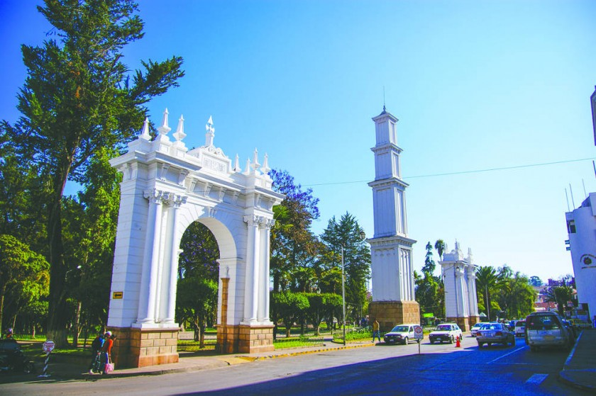
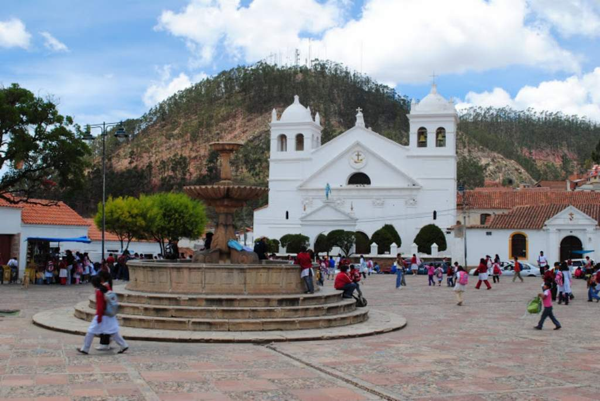
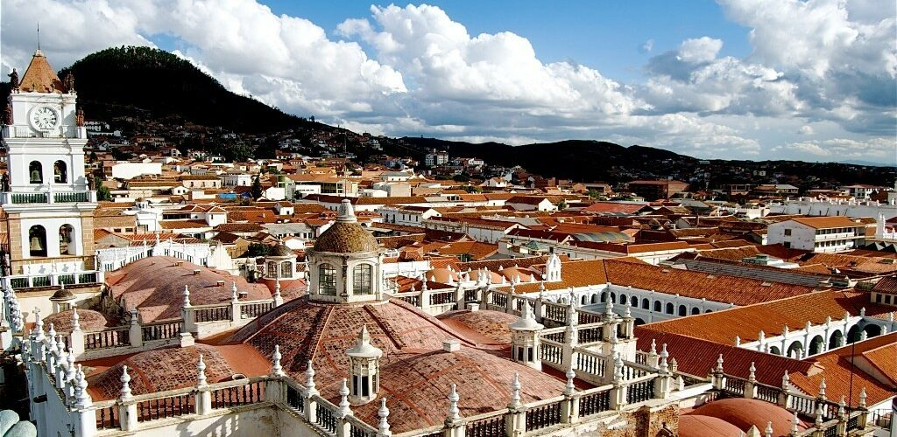
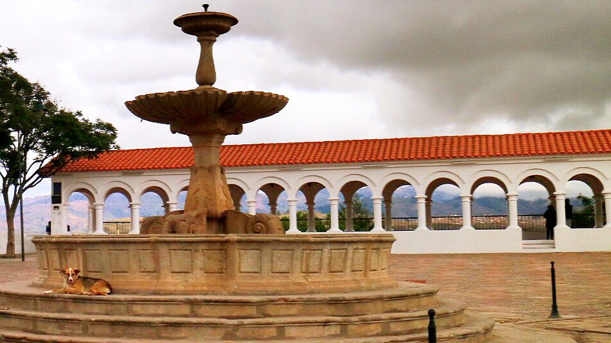

SUCRE-BOLIVIA
Sucre es una ciudad que se encuentra en el departamento de Chuquisa.En sucre esta la Casa de la Libertad encalada es donde se firmó la Declaración de Independencia de Bolivia y alberga
galerías relacionadas con el pasado de la ciudad como capital de la nación. El Parque Simón Bolívar, antiguamente llamado Paseo del Prado, es un parque antiguo ubicado en Sucre, Bolivia.
Monasterio de La Recoleta o Santa Ana de Monte Sión, es un monasterio franciscano situado en la ciudad de Sucre, capital constitucional de Bolivia.
Casco viejo de Sucre |
Parque Bolivar |
Recoleta |
|---|---|---|
|  |  | |
|  |  |
 |